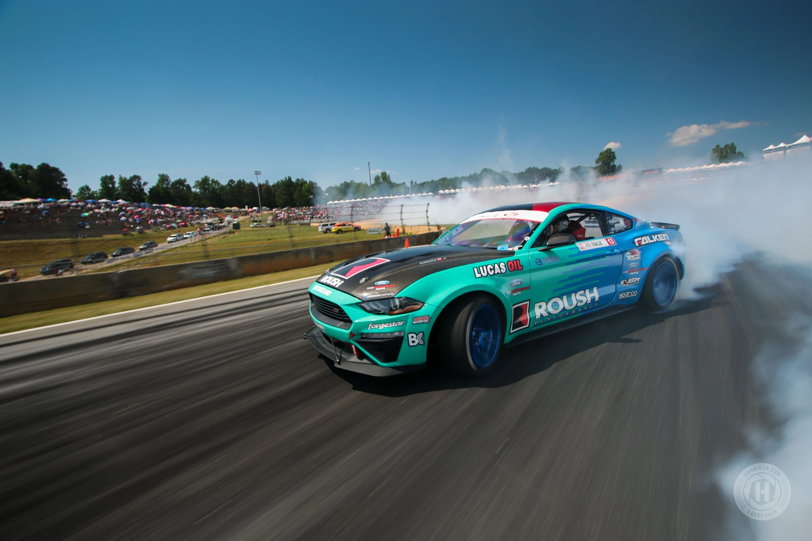

 A drift gyökerét Japánban találhatjuk meg. Az 1960-as években itt rendezték meg először az akkoriban divatos, úgynevezett "touge" illegális hegyi versenyeket. A touge versenyzők vagy más nevükön a "Rolling Zoku"-k egyetlen célja, hogy minél rövidebb idő alatt teljesítsék a hegyi út két kijelölt pontja közötti távot. Néhányan közülük a jobb idő kedvéért a rallye-ból ellesett kanyarvételi technikákat alkalmazták, ebből nőtte ki magát később a drift. Maga a sportág az 1980-as évek utcai japán autóőrültek (underground street) körének köszönhető, akik hátsókerekes tuningolt autóikban rejlő lehetőségek kihasználását már nem tartották biztonságosnak a közutakon.